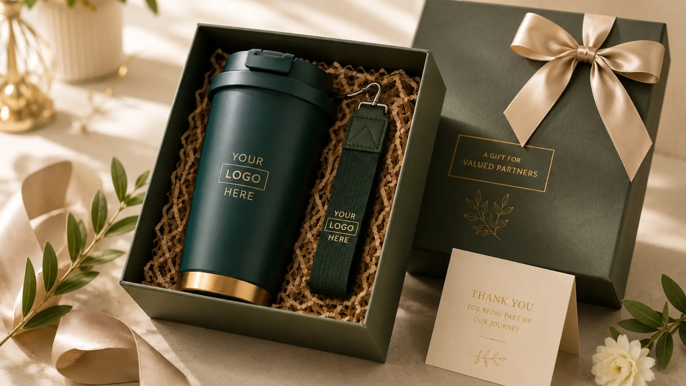

Tumbler Merchandise yang Cocok untuk Branding dan Promosi
Ringkasan
Tumbler merchandise adalah pilihan branding paling efektif untuk perusahaan karena dipakai berulang setiap hari, mudah dicetak logo, dan menjangkau audiens lebih luas dibanding merchandise sekali pakai. tumblersouvenir.com menghadirkan tumbler custom branding berkualitas premium yang siap memperkuat citra profesional perusahaan Anda.
- Tumbler custom memberi eksposur brand berulang karena digunakan setiap hari oleh karyawan maupun klien.
- Material premium seperti stainless steel menjaga logo tetap tajam dan tahan lama.
- Tumbler cocok untuk berbagai acara: gathering, seminar, ulang tahun perusahaan, hingga hadiah klien.
- Biaya per eksposur tumbler jauh lebih rendah dibanding iklan konvensional dalam jangka panjang.
- tumblersouvenir.com menyediakan layanan custom logo end-to-end untuk kebutuhan korporat.
Daftar Isi
- Mengapa Tumbler Menjadi Pilihan Utama Merchandise Branding Kantor?
- Apa Saja Manfaat Tumbler Custom untuk Citra Perusahaan?
- Bagaimana Tumbler Bekerja sebagai Media Promosi yang Efektif?
- Faktor Apa Saja yang Menentukan Efektivitas Tumbler Branding?
- Kesalahan Umum dalam Memilih Tumbler Merchandise Korporat
- Kapan Waktu Terbaik Menggunakan Tumbler sebagai Merchandise Promosi?
Merchandise korporat menjadi salah satu instrumen branding yang paling konsisten digunakan perusahaan modern, dan di antara berbagai pilihan yang tersedia, tumbler menempati posisi istimewa.
Berbeda dengan merchandise yang cenderung disimpan atau jarang dipakai, tumbler memiliki fungsi harian yang membuatnya terus terlihat, baik oleh pemiliknya sendiri maupun orang di sekitarnya. Setiap kali seorang karyawan membawa tumbler ke meja kerja, ke ruang rapat, atau ke kafe, logo perusahaan turut menyertainya sebagai bentuk promosi pasif yang berjalan sepanjang hari.
Bagi tim marketing dan HRD yang bertanggung jawab atas anggaran merchandise, pertanyaan yang sering muncul bukan lagi "apakah tumbler efektif", melainkan "bagaimana memaksimalkan tumbler sebagai media branding yang tepat sasaran". Artikel ini membahas secara menyeluruh mengapa tumbler layak menjadi prioritas dalam strategi promosi perusahaan, faktor apa saja yang menentukan efektivitasnya, serta bagaimana tumblersouvenir.com dapat menjadi mitra tepercaya untuk mewujudkan kebutuhan tersebut.
Mengapa Tumbler Menjadi Pilihan Utama Merchandise Branding Kantor?
Tumbler menjadi pilihan utama merchandise branding kantor karena kombinasi antara fungsi harian yang tinggi, daya tahan produk, dan area cetak yang luas untuk menampilkan logo secara jelas. Ketiga faktor ini membuat tumbler unggul dibanding merchandise sejenis seperti gantungan kunci atau notes.
Merchandise idealnya dipilih berdasarkan tingkat pemakaian oleh penerimanya. Barang yang jarang dipakai, meskipun terlihat menarik, cenderung tidak memberi dampak branding yang signifikan. Tumbler berada di posisi sebaliknya: fungsinya sebagai wadah minum membuatnya melekat dalam rutinitas harian, baik di lingkungan kantor, perjalanan dinas, maupun aktivitas pribadi karyawan.
Selain itu, permukaan tumbler yang relatif luas memungkinkan logo perusahaan dicetak dengan ukuran dan detail yang jelas terbaca, berbeda dengan merchandise berukuran kecil yang membatasi ruang desain. Kombinasi visibilitas tinggi dan area cetak yang optimal inilah yang menjadikan tumbler sebagai media branding dengan rasio biaya terhadap eksposur yang sangat kompetitif.
Apa Saja Manfaat Tumbler Custom untuk Citra Perusahaan?
Tumbler custom memberi manfaat berupa peningkatan brand recall, penguatan citra profesional, serta efek psikologis kebanggaan bagi karyawan yang menggunakannya sebagai identitas perusahaan. Manfaat ini berlaku baik untuk penggunaan internal maupun eksternal.
Untuk kebutuhan internal, tumbler custom sering dijadikan bagian dari onboarding kit karyawan baru atau apresiasi atas pencapaian tertentu. Penggunaan tumbler dengan logo perusahaan secara konsisten membangun rasa memiliki (sense of belonging) di kalangan karyawan, sekaligus menjadi identitas visual yang memperkuat budaya perusahaan.

Untuk kebutuhan eksternal, tumbler custom kerap dipilih sebagai hadiah bagi klien, mitra bisnis, atau peserta acara korporat seperti seminar dan gathering. Dalam konteks ini, tumbler berfungsi ganda: sebagai bentuk apresiasi sekaligus alat pengingat brand yang halus namun berkelanjutan. Menurut riset industri barang promosi, penerima merchandise fungsional seperti tumbler cenderung mengingat nama perusahaan pemberi dalam jangka waktu yang jauh lebih lama dibanding merchandise dekoratif, karena interaksi berulang dengan produk tersebut.
Bagaimana Tumbler Bekerja sebagai Media Promosi yang Efektif?
Tumbler bekerja sebagai media promosi efektif melalui mekanisme paparan berulang (repeated exposure), di mana logo perusahaan dilihat oleh pemilik tumbler dan orang di sekitarnya berkali-kali dalam satu hari, jauh melampaui frekuensi paparan iklan digital konvensional.
Prinsip dasar dari efektivitas promosi merchandise terletak pada durasi dan frekuensi kontak visual antara audiens dan brand. Iklan digital, meski menjangkau audiens luas, umumnya hanya dilihat dalam hitungan detik dan mudah terlupakan. Sebaliknya, tumbler yang digunakan setiap hari menciptakan titik kontak visual berulang, baik saat digunakan sendiri, diletakkan di meja kerja, maupun dibawa ke ruang publik seperti kafe atau transportasi umum.
Efek jangka panjang inilah yang membuat biaya per eksposur tumbler custom cenderung lebih efisien dibanding banyak kanal promosi konvensional, terutama ketika dihitung berdasarkan masa pakai produk yang bisa mencapai satu hingga beberapa tahun. Secara umum, semakin tinggi kualitas material tumbler, semakin panjang pula durasi eksposur brand yang dihasilkan.
Faktor Apa Saja yang Menentukan Efektivitas Tumbler Branding?
Efektivitas tumbler branding ditentukan oleh empat faktor utama: kualitas material, teknik cetak logo, relevansi desain dengan identitas brand, serta ketepatan momen distribusi kepada target penerima.
Kualitas material menjadi fondasi utama. Tumbler berbahan stainless steel food grade umumnya lebih tahan lama dibanding plastik, sehingga logo yang tercetak juga bertahan lebih lama tanpa mengelupas atau pudar.
Teknik cetak logo turut memengaruhi daya tahan visual branding. Teknik seperti laser engraving atau sablon UV cenderung menghasilkan hasil cetak yang lebih tahan gesekan dan pencucian dibanding stiker atau cetak tempel biasa.
Relevansi desain dengan identitas brand memastikan tumbler tidak sekadar menjadi merchandise generik, melainkan representasi visual yang konsisten dengan warna, tipografi, dan nilai perusahaan.
Ketepatan momen distribusi, misalnya saat gathering tahunan, peluncuran produk, atau kunjungan klien penting, memastikan tumbler diterima dalam konteks yang meningkatkan nilai emosionalnya di mata penerima.
Kesalahan Umum dalam Memilih Tumbler Merchandise Korporat
Kesalahan paling umum dalam memilih tumbler merchandise korporat adalah terlalu fokus pada harga termurah tanpa mempertimbangkan kualitas material, sehingga logo cepat pudar dan justru menurunkan persepsi kualitas brand di mata penerima.
Selain itu, banyak perusahaan juga mengabaikan kesesuaian ukuran logo dengan bidang cetak tumbler, sehingga hasil akhir terlihat tidak proporsional. Kesalahan lain adalah tidak menyesuaikan desain tumbler dengan segmen penerima; tumbler untuk karyawan internal, misalnya, bisa memiliki pendekatan desain yang berbeda dengan tumbler untuk klien eksternal yang lebih mengutamakan kesan elegan dan profesional.
Perencanaan yang matang, termasuk memperhitungkan jumlah pesanan, tenggat waktu produksi, dan kebutuhan desain khusus, menjadi kunci agar tumbler branding benar-benar memberikan dampak yang diharapkan tanpa hambatan teknis di lapangan.
Kapan Waktu Terbaik Menggunakan Tumbler sebagai Merchandise Promosi?
Waktu terbaik menggunakan tumbler sebagai merchandise promosi adalah pada momen-momen yang memiliki nilai emosional tinggi bagi penerima, seperti acara gathering tahunan, perayaan ulang tahun perusahaan, seminar atau workshop, serta kunjungan apresiasi kepada klien dan mitra bisnis.
Momen-momen tersebut secara alami menciptakan konteks positif yang memperkuat asosiasi antara tumbler dan pengalaman baik yang dirasakan penerima. Semakin positif konteks penyerahan merchandise, semakin besar pula kemungkinan tumbler tersebut digunakan secara berkelanjutan, yang pada akhirnya memperpanjang durasi eksposur brand perusahaan.
Tumbler merchandise terbukti menjadi salah satu instrumen branding paling efisien bagi perusahaan karena menggabungkan fungsi harian, daya tahan produk, dan area cetak logo yang optimal. Efektivitasnya sangat bergantung pada kualitas material, teknik cetak, serta ketepatan momen distribusi kepada target penerima, baik untuk kebutuhan internal maupun eksternal perusahaan.
Bagi perusahaan yang ingin menghadirkan tumbler custom branding dengan kualitas premium dan proses pemesanan yang mudah, tumblersouvenir.com siap menjadi mitra tepercaya. Konsultasikan kebutuhan merchandise korporat Anda sekarang bersama tim tumblersouvenir.com dan wujudkan tumbler branding yang benar-benar merepresentasikan citra profesional perusahaan Anda.